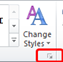
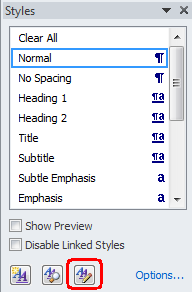
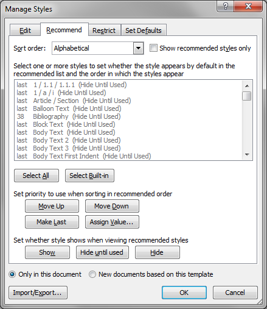
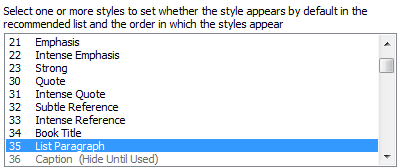

Changing the display order of styles in the Quick Styles gallery 07/04/15

Once you have set up your Quick Styles gallery with the styles you use most frequently, you should change the order so that your most frequently-used styles are at the beginning of the list. This will speed up the style selection process.
To change the order of styles:
-
Click the diagonal arrow at the bottom right hand end of the Styles list on the Home tab.

The Styles pane is displayed. -
Click the Manage Styles icon.
 -
Click the Recommend tab.
 -
Find the first style that you want to move in the gallery.
Note: If the style is greyed out in the list, click Show to reinstate it.

The number to the left of the style (between 1 and 99) determines the position of the style in the Quick Styles gallery. If two styles have the same number then they will be ordered alphabetically. - Click Assign Value to change the position number.
-
Select As recommended from the Sort order drop-down list.
The list shows the styles in the order they are displayed in the Quick Styles gallery. - Click OK to close the Manage Styles window and update the Quick Styles list.
This concludes my series of articles on the Microsoft Word Styles pane.
All images in this article are screen captures of Microsoft Word 2010, but the process is the same in Microsoft Word 2013 and Microsoft Word 2007.